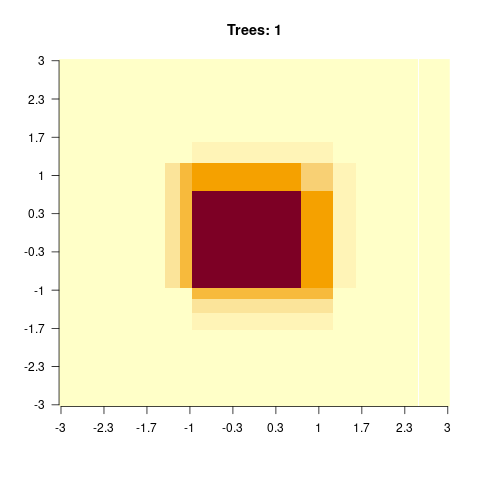

library(rpart)
library(rpart.plot)
data = airquality[complete.cases(airquality),]5 Tree-based Algorithms
5.1 Classification and Regression Trees
Tree-based algorithms use a series of if-then rules to generate predictions from one or more decision trees. In this lecture, we will explore regression and classification trees by the example of the airquality data set. There is one important hyperparameter for regression trees: “minsplit”.
- It controls the depth of tree (see the help of rpart for a description).
- It controls the complexity of the tree and can thus also be seen as a regularization parameter.
Fit and visualize one(!) regression tree:
rt = rpart(Ozone~., data = data, control = rpart.control(minsplit = 10))
rpart.plot(rt)Visualize the predictions:
pred = predict(rt, data)
plot(data$Temp, data$Ozone)
lines(data$Temp[order(data$Temp)], pred[order(data$Temp)], col = "red")The angular form of the prediction line is typical for regression trees and is a weakness of it.
5.2 Random Forest
To overcome this weakness, a random forest uses an ensemble of regression/classification trees. In principle, a random forest is nothing more than a normal regression/classification tree, but it uses the idea of “wisdom of the crowd”: by asking many people (regression/classification trees), you can make a more informed decision (prediction/classification). For example, if you wanted to buy a new phone, you wouldn’t go directly to the store, but you would search the Internet and ask your friends and family.
There are two randomization steps with the random forest that are responsible for their success:
- Bootstrap samples for each tree (we will sample observations with replacement from the data set. For the phone this is like not everyone has experience about each phone).
- At each split, we will sample a subset of predictors that is then considered as potential splitting criterion (for the phone this is like that not everyone has the same decision criteria). Annotation: While building a decision tree (random forests consist of many decision trees), one splits the data at some point according to their features. For example if you have females and males, big and small people in a crowd, you con split this crowd by gender and then by size or by size and then by gender to build a decision tree.
Applying the random forest follows the same principle as for the methods before: We visualize the data (we have already done this so often for the airquality data set, thus we skip it here), fit the algorithm and then plot the outcomes.
Fit a random forest and visualize the predictions:
library(randomForest)
set.seed(123)
data = airquality[complete.cases(airquality),]
rf = randomForest(Ozone~., data = data)
pred = predict(rf, data)
plot(Ozone~Temp, data = data)
lines(data$Temp[order(data$Temp)], pred[order(data$Temp)], col = "red")One advantage of random forest is that we get an importance of the variables. For each split in each tree, the improvement in the split criterion is the measure of importance attributed to the split variable, and is accumulated over all trees in the forest separately for each variable. Thus, the variable importance tells us how important a variable is averaged across all trees.
rf$importance IncNodePurity
Solar.R 17969.59
Wind 31978.36
Temp 34176.71
Month 10753.73
Day 15436.47There are several important hyperparameters in a random forest that we can tune to get better results:
| Hyperparameter | Explanation |
|---|---|
| mtry | Subset of features randomly selected in each node (from which the algorithm can select the feature that will be used to split the data). |
| minimum node size | Minimal number of observations allowed in a node (before the branching is canceled) |
| max depth | Maximum number of tree depth |
5.3 Boosted Regression Trees
A boosted regression tree (BRT) starts with a simple regression tree (weak learner) and then sequentially fits additional trees to improve the results. There are two different strategies to do this:
- AdaBoost: Wrong classified observations (by the previous tree) will get a higher weight and therefore the next trees will focus on difficult/missclassified observations.
- Gradient boosting (state of the art): Each sequential model will be fit on the residual errors of the previous model (strongly simplified, the actual algorithm is complex).
We can fit a boosted regression tree using xgboost, but before we have to transform the data into a xgb.Dmatrix (which is a xgboost specific data type, the package sadly doesn’t support R matrices or data.frames).
library(xgboost)
set.seed(123)
data = airquality[complete.cases(airquality),]data_xg = xgb.DMatrix(data = as.matrix(scale(data[,-1])), label = data$Ozone)
brt = xgboost(data_xg, nrounds = 16L)[1] train-rmse:39.724624
[2] train-rmse:30.225761
[3] train-rmse:23.134840
[4] train-rmse:17.899179
[5] train-rmse:14.097785
[6] train-rmse:11.375457
[7] train-rmse:9.391276
[8] train-rmse:7.889690
[9] train-rmse:6.646586
[10] train-rmse:5.804859
[11] train-rmse:5.128437
[12] train-rmse:4.456416
[13] train-rmse:4.069464
[14] train-rmse:3.674615
[15] train-rmse:3.424578
[16] train-rmse:3.191301 The parameter “nrounds” controls how many sequential trees we fit, in our example this was 16. When we predict on new data, we can limit the number of trees used to prevent overfitting (remember: each new tree tries to improve the predictions of the previous trees).
Let us visualize the predictions for different numbers of trees:
oldpar = par(mfrow = c(2, 2))
for(i in 1:4){
pred = predict(brt, newdata = data_xg, ntreelimit = i)
plot(data$Temp, data$Ozone, main = i)
lines(data$Temp[order(data$Temp)], pred[order(data$Temp)], col = "red")
}[10:05:51] WARNING: src/c_api/c_api.cc:935: `ntree_limit` is deprecated, use `iteration_range` instead.[10:05:51] WARNING: src/c_api/c_api.cc:935: `ntree_limit` is deprecated, use `iteration_range` instead.[10:05:51] WARNING: src/c_api/c_api.cc:935: `ntree_limit` is deprecated, use `iteration_range` instead.[10:05:51] WARNING: src/c_api/c_api.cc:935: `ntree_limit` is deprecated, use `iteration_range` instead.par(oldpar)There are also other ways to control for complexity of the boosted regression tree algorithm:
- max_depth: Maximum depth of each tree.
- shrinkage (each tree will get a weight and the weight will decrease with the number of trees).
When having specified the final model, we can obtain the importance of the variables like for random forests:
xgboost::xgb.importance(model = brt) Feature Gain Cover Frequency
<char> <num> <num> <num>
1: Temp 0.570072012 0.2958229 0.24836601
2: Wind 0.348230653 0.3419576 0.24183007
3: Solar.R 0.058795502 0.1571072 0.30718954
4: Day 0.019529985 0.1779925 0.16993464
5: Month 0.003371847 0.0271197 0.03267974sqrt(mean((data$Ozone - pred)^2)) # RMSE[1] 17.89918data_xg = xgb.DMatrix(data = as.matrix(scale(data[,-1])), label = data$Ozone)One important strength of xgboost is that we can directly do a cross-validation (which is independent of the boosted regression tree itself!) and specify its properties with the parameter “n-fold”:
set.seed(123)
brt = xgboost(data_xg, nrounds = 5L)[1] train-rmse:39.724624
[2] train-rmse:30.225761
[3] train-rmse:23.134840
[4] train-rmse:17.899179
[5] train-rmse:14.097785 brt_cv = xgboost::xgb.cv(data = data_xg, nfold = 3L,
nrounds = 3L, nthreads = 4L)[1] train-rmse:39.895106+2.127355 test-rmse:40.685477+5.745327
[2] train-rmse:30.367660+1.728788 test-rmse:32.255812+5.572963
[3] train-rmse:23.446237+1.366757 test-rmse:27.282435+5.746244 print(brt_cv)##### xgb.cv 3-folds
iter train_rmse_mean train_rmse_std test_rmse_mean test_rmse_std
<num> <num> <num> <num> <num>
1 39.89511 2.127355 40.68548 5.745327
2 30.36766 1.728788 32.25581 5.572963
3 23.44624 1.366757 27.28244 5.746244Annotation: The original data set is randomly partitioned into \(n\) equal sized subsamples. Each time, the model is trained on \(n - 1\) subsets (training set) and tested on the left out set (test set) to judge the performance.
If we do three-folded cross-validation, we actually fit three different boosted regression tree models (xgboost models) on \(\approx 67\%\) of the data points. Afterwards, we judge the performance on the respective holdout. This now tells us how well the model performed.
Important hyperparameters:
| Hyperparameter | Explanation |
|---|---|
| eta | learning rate (weighting of the sequential trees) |
| max depth | maximal depth in the trees (small = low complexity, large = high complexity) |
| subsample | subsample ratio of the data (bootstrap ratio) |
| lambda | regularization strength of the individual trees |
| max tree | maximal number of trees in the ensemble |
5.4 Exercise - Trees
Question: Understanding complexity in Regression Trees
The goal of this exercise is to understand how the hyperparameter mincut (minsplit) affects the complexity of regression trees.
library(tree)
set.seed(123)
data = airquality
rt = tree(Ozone~., data = data,
control = tree.control(mincut = 1L, nobs = nrow(data)))
plot(rt)
text(rt)
pred = predict(rt, data)
plot(data$Temp, data$Ozone)
lines(data$Temp[order(data$Temp)], pred[order(data$Temp)], col = "red")
sqrt(mean((data$Ozone - pred)^2)) # RMSETasks:
- The code snippet above returns NA for the RMSE, what is wrong in the snippet?
- Read the
tree.controldocumentation, what does the mincut parameter do? - Try different mincut values and check how the predictions (and the RMSE) change. What was wrong in the snippet above?
library(tree)
set.seed(123)
data = airquality[complete.cases(airquality),]
doTask = function(mincut){
rt = tree(Ozone~., data = data,
control = tree.control(mincut = mincut, nobs = nrow(data)))
pred = predict(rt, data)
plot(data$Temp, data$Ozone,
main = paste0(
"mincut: ", mincut,
"\nRMSE: ", round(sqrt(mean((data$Ozone - pred)^2)), 2)
)
)
lines(data$Temp[order(data$Temp)], pred[order(data$Temp)], col = "red")
}
for(i in c(1, 2, 3, 5, 10, 15, 25, 50, 54, 55, 56, 57, 75, 100)){ doTask(i) }


Approximately at mincut = 15, prediction is the best (mind overfitting). After mincut = 56, the prediction has no information at all and the RMSE stays constant.
Mind the complete cases of the airquality data set, that was the error.
Question: Understanding complexity in Random forest
The goal of this exercise is to understand how the hyperparameter nodesize affects the complexity of random forest.
library(randomForest)
set.seed(123)
data = airquality[complete.cases(airquality),]
rf = randomForest(Ozone~., data = data)
pred = predict(rf, data)
importance(rf) IncNodePurity
Solar.R 17969.59
Wind 31978.36
Temp 34176.71
Month 10753.73
Day 15436.47cat("RMSE: ", sqrt(mean((data$Ozone - pred)^2)), "\n")RMSE: 9.507848 plot(data$Temp, data$Ozone)
lines(data$Temp[order(data$Temp)], pred[order(data$Temp)], col = "red")
Tasks:
- Check the documentation of the
randomForestfunction and read the description of the nodesize parameter - Try different nodesize values and describe how the predictions change
library(randomForest)
set.seed(123)
data = airquality[complete.cases(airquality),]
for(nodesize in c(1, 15, 50, 100)){
for(mtry in c(1, 3, 5)){
rf = randomForest(Ozone~., data = data, nodesize = nodesize)
pred = predict(rf, data)
plot(data$Temp, data$Ozone, main = paste0(
" nodesize: ", nodesize,
"\nRMSE: ", round(sqrt(mean((data$Ozone - pred)^2)), 2)
)
)
lines(data$Temp[order(data$Temp)], pred[order(data$Temp)], col = "red")
}
}


Nodesize affects the complexity. In other words: The bigger the nodesize, the smaller the trees and the more bias/less variance.
Question: Understanding complexity in Boosted regression trees
The goal of this exercise is to understand how complexity in BRT affects predictions. For that, we will simulate data with two predictors x1 and x2 and the y response variable will be an interaction of the two predictors:
\[y = e^{-x_1^2 - x_2^2} \] We can visualize the simulated data as an image (x1 and x2 on the x and y axis, and the y values as colors)
library(xgboost)
library(animation)
set.seed(123)
x1 = seq(-3, 3, length.out = 100)
x2 = seq(-3, 3, length.out = 100)
x = expand.grid(x1, x2)
y = apply(x, 1, function(t) exp(-t[1]^2 - t[2]^2))
image(matrix(y, 100, 100), main = "Original image", axes = FALSE, las = 2)
axis(1, at = seq(0, 1, length.out = 10),
labels = round(seq(-3, 3, length.out = 10), 1))
axis(2, at = seq(0, 1, length.out = 10),
labels = round(seq(-3, 3, length.out = 10), 1), las = 2)model = xgboost::xgboost(xgb.DMatrix(data = as.matrix(x), label = y),
nrounds = 500L, verbose = 0L)
pred = predict(model, newdata = xgb.DMatrix(data = as.matrix(x)),
ntreelimit = 10L)
saveGIF(
{
for(i in c(1, 2, 4, 8, 12, 20, 40, 80, 200)){
pred = predict(model, newdata = xgb.DMatrix(data = as.matrix(x)),
ntreelimit = i)
image(matrix(pred, 100, 100), main = paste0("Trees: ", i),
axes = FALSE, las = 2)
axis(1, at = seq(0, 1, length.out = 10),
labels = round(seq(-3, 3, length.out = 10), 1))
axis(2, at = seq(0, 1, length.out = 10),
labels = round(seq(-3, 3, length.out = 10), 1), las = 2)
}
},
movie.name = "boosting.gif", autobrowse = FALSE
)
Tasks:
- Run the code above and try different max_depth values and describe what you see!
Tip: have a look at the boosting.gif.
library(xgboost)
library(animation)
set.seed(123)
x1 = seq(-3, 3, length.out = 100)
x2 = seq(-3, 3, length.out = 100)
x = expand.grid(x1, x2)
y = apply(x, 1, function(t) exp(-t[1]^2 - t[2]^2))
image(matrix(y, 100, 100), main = "Original image", axes = FALSE, las = 2)
axis(1, at = seq(0, 1, length.out = 10),
labels = round(seq(-3, 3, length.out = 10), 1))
axis(2, at = seq(0, 1, length.out = 10),
labels = round(seq(-3, 3, length.out = 10), 1), las = 2)
for(max_depth in c(3, 6, 10, 20)){
model = xgboost::xgboost(xgb.DMatrix(data = as.matrix(x), label = y),
max_depth = max_depth,
nrounds = 500, verbose = 0L)
saveGIF(
{
for(i in c(1, 2, 4, 8, 12, 20, 40, 80, 200)){
pred = predict(model, newdata = xgb.DMatrix(data = as.matrix(x)),
ntreelimit = i)
image(matrix(pred, 100, 100),
main = paste0("eta: ", eta,
" max_depth: ", max_depth,
" Trees: ", i),
axes = FALSE, las = 2)
axis(1, at = seq(0, 1, length.out = 10),
labels = round(seq(-3, 3, length.out = 10), 1))
axis(2, at = seq(0, 1, length.out = 10),
labels = round(seq(-3, 3, length.out = 10), 1), las = 2)
}
},
movie.name = paste0("boosting_", max_depth, "_", eta, ".gif"),
autobrowse = FALSE
)
}We see that for high values of max_depth, the predictions “smooth out” faster. On the other hand, with a low max_depth (low complexity of the individual trees), more trees are required in the ensemble to achieve a smooth prediction surface.
?xgboost::xgboostJust some examples:


Question: Hyperparameter tuning of boosted regression trees
Important hyperparameters:
| Hyperparameter | Explanation |
|---|---|
| eta | learning rate (weighting of the sequential trees) |
| max depth | maximal depth in the trees (small = low complexity, large = high complexity) |
| subsample | subsample ratio of the data (bootstrap ratio) |
| lambda | regularization strength of the individual trees |
| max tree | maximal number of trees in the ensemble |
The goal of this exercise is to tune a BRT on the titanic_ml dataset and beat yesterday’s RF predictions.
Prepare the data:
library(EcoData)
library(dplyr)
Attaching package: 'dplyr'The following object is masked from 'package:xgboost':
sliceThe following object is masked from 'package:randomForest':
combineThe following objects are masked from 'package:stats':
filter, lagThe following objects are masked from 'package:base':
intersect, setdiff, setequal, unionlibrary(missRanger)
data(titanic_ml)
data = titanic_ml
data =
data %>% select(survived, sex, age, fare, pclass)
data[,-1] = missRanger(data[,-1], verbose = 0)
data_sub =
data %>%
mutate(age = scales::rescale(age, c(0, 1)),
fare = scales::rescale(fare, c(0, 1))) %>%
mutate(sex = as.integer(sex) - 1L,
pclass = as.integer(pclass - 1L))
data_new = data_sub[is.na(data_sub$survived),] # for which we want to make predictions at the end
data_obs = data_sub[!is.na(data_sub$survived),] # data with known responseTasks:
- Tune eta and max depth!
library(xgboost)
set.seed(42)
data_obs = data_sub[!is.na(data_sub$survived),]
cv = 3
split = sample.int(cv, nrow(data_obs), replace = T)
# sample minnodesize values (must be integers)
hyper_depth = sample(200, 20)
hyper_eta = runif(20, 0, 1)
tuning_results =
sapply(1:length(hyper_depth), function(k) {
auc_inner = NULL
for(j in 1:cv) {
inner_split = split == j
train_inner = data_obs[!inner_split, ]
test_inner = data_obs[inner_split, ]
data_xg = xgb.DMatrix(data = as.matrix(train_inner[,-1]), label = train_inner$survived)
model = xgboost(data_xg, nrounds = 16L, eta = hyper_eta[k], max_depth = hyper_depth[k], objective = "reg:logistic", verbose = 0)
predictions = predict(model, newdata = as.matrix(test_inner)[,-1])
auc_inner[j]= Metrics::auc(test_inner$survived, predictions)
}
return(mean(auc_inner))
})
results = data.frame(depth = hyper_depth, eta = hyper_eta, AUC = tuning_results)
print(results) depth eta AUC
1 63 0.81336270 0.8201865
2 190 0.87043248 0.8288359
3 19 0.01916128 0.8150229
4 21 0.82474818 0.8181561
5 107 0.40126850 0.8222465
6 191 0.67205829 0.8187190
7 98 0.11867222 0.8221003
8 116 0.47642434 0.8197725
9 135 0.92533996 0.8179209
10 177 0.57483934 0.8203259
11 68 0.91275158 0.8230057
12 173 0.75530192 0.8241578
13 115 0.63099992 0.8209234
14 65 0.79442065 0.8289604
15 92 0.92354646 0.8134317
16 81 0.16446881 0.8252634
17 164 0.19288394 0.8242471
18 162 0.09764267 0.8177379
19 155 0.82910940 0.8159333
20 154 0.80586396 0.8215947Make predictions:
data_xg = xgb.DMatrix(data = as.matrix(data_obs[,-1]), label = data_obs$survived)
model = xgboost(data_xg, nrounds = 16L, eta = results[which.max(results$AUC), 2], max_depth = results[which.max(results$AUC), 1], objective = "reg:logistic")
predictions = predict(model, newdata = as.matrix(data_new)[,-1])
# Single predictions from the ensemble model:
write.csv(data.frame(y = predictions), file = "Max_titanic_xgboost.csv")
Bonus: Implement a BRT on your own!
You can easily implement a BRT or boosted linear model using the rpart package or the lm function.
Go through the code line by line and try to understand it. Ask, if you have any questions:
Let’s try it:
data = model.matrix(~. , data = airquality)
model = get_boosting_model(x = data[,-2], y = data[,2], n_trees = 5L )
pred = predict(model, newdata = data[,-2])
plot(data[,2], pred, xlab = "observed", ylab = "predicted")
Question: Hyperparameter tuning of random forest
| Hyperparameter | Explanation |
|---|---|
| mtry | Subset of features randomly selected in each node (from which the algorithm can select the feature that will be used to split the data). |
| minimum node size | Minimal number of observations allowed in a node (before the branching is canceled) |
| max depth | Maximum number of tree depth |
Combing back to the titanic dataset from the morning, we want to optimize min node size in our RF using a simple CV.
Prepare the data:
library(EcoData)
library(dplyr)
library(missRanger)
data(titanic_ml)
data = titanic_ml
data =
data %>% select(survived, sex, age, fare, pclass)
data[,-1] = missRanger(data[,-1], verbose = 0)
data_sub =
data %>%
mutate(age = scales::rescale(age, c(0, 1)),
fare = scales::rescale(fare, c(0, 1))) %>%
mutate(sex = as.integer(sex) - 1L,
pclass = as.integer(pclass - 1L))
data_new = data_sub[is.na(data_sub$survived),] # for which we want to make predictions at the end
data_obs = data_sub[!is.na(data_sub$survived),] # data with known response
data_sub$survived = as.factor(data_sub$survived)
data_obs$survived = as.factor(data_obs$survived)Hints:
- adjust the ‘
type’ argument in thepredict(…)method (the default is to predict classes) - when predicting probabilities, the randomForest will return a matrix, a column for each class, we are interested in the probability of surviving (so the second column)
Bonus:
- tune min node size (and mtry)
- use more features
library(randomForest)
set.seed(42)
data_obs = data_sub[!is.na(data_sub$survived),]
data_obs$survived = as.factor(data_obs$survived)
cv = 3
hyper_minnodesize = sample(100, 20)
split = sample.int(cv, nrow(data_obs), replace = T)
tuning_results =
sapply(1:length(hyper_minnodesize), function(k) {
auc_inner = NULL
for(j in 1:cv) {
inner_split = split == j
train_inner = data_obs[!inner_split, ]
test_inner = data_obs[inner_split, ]
model = randomForest(survived~.,data = train_inner, nodesize = hyper_minnodesize[k])
predictions = predict(model, test_inner, type = "prob")[,2]
auc_inner[j]= Metrics::auc(test_inner$survived, predictions)
}
return(mean(auc_inner))
})
results = data.frame(minnodesize = hyper_minnodesize, AUC = tuning_results)
print(results) minnodesize AUC
1 49 0.8157904
2 65 0.8097477
3 25 0.8222759
4 74 0.8135160
5 18 0.8257731
6 100 0.8086002
7 47 0.8153151
8 24 0.8246248
9 71 0.8181533
10 89 0.8101602
11 37 0.8247795
12 20 0.8239917
13 26 0.8263038
14 3 0.8309202
15 41 0.8212540
16 27 0.8239286
17 36 0.8251308
18 5 0.8274042
19 34 0.8214008
20 87 0.8148782Make predictions:
model = randomForest(survived~.,data = data_obs, nodesize = results[which.max(results$AUC),1])
write.csv(data.frame(y = predict(model, data_new, type = "prob")[,2]), file = "Max_titanic_rf.csv")